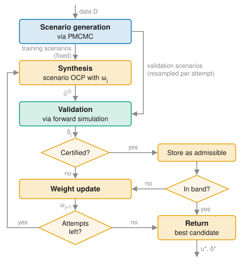

Overview
This section summarizes the method implemented in the package. It is intended as a guide to the code rather than a substitute for the paper, which contains the full derivations, assumptions, and proofs.
Problem setting
Consider a nonlinear discrete-time dynamical system
\[\begin{aligned} x_{t+1} &= f_\theta(x_t, u_t, v_t), \\ y_t &= g_\theta(x_t, u_t) + w_t, \end{aligned}\]
with state $x_t \in \mathbb{R}^{n_x}$, input $u_t \in \mathbb{R}^{n_u}$, and output $y_t \in \mathbb{R}^{n_y}$. The state is not measured; only the output is available for learning and feedback. The functions $f_\theta$ and $g_\theta$ belong to a known parametric model class, while the parameters $\theta$ are unknown. The process noise $v_t \sim \mathcal{V}_\theta$ and measurement noise $w_t \sim \mathcal{W}_\theta$ are i.i.d. over time, mutually independent, and independent of the initial state; their distributions may depend on $\theta$.
Prior knowledge enters in two ways: through the structure of $f_\theta$ and $g_\theta$, for instance derived from first principles, and through prior distributions $p(\theta)$ and $p(x_0 \mid \theta)$. The true parameters and initial state are assumed to be realizations drawn from these priors.
Given a dataset $\mathcal{D} = (u_{0:t_0-1}, y_{0:t_0-1})$ of past inputs and outputs, a prediction horizon $H$, and a cost function $J(u_{t_0:t_0+H}, x_{t_0:t_0+H}, y_{t_0:t_0+H})$, the goal is to find an input sequence $u_{t_0:t_0+H}$ in a compact set of admissible inputs that minimizes the expected cost subject to the chance constraint
\[\mathbb{P}\left[ h(u_{t_0:t_0+H}, x_{t_0:t_0+H}, y_{t_0:t_0+H}) \leq 0 \right] \geq 1 - \alpha,\]
where $\alpha \in (0, 1)$ is the admissible risk level. The probability is taken with respect to the joint uncertainty over parameters, latent states, and future disturbances that remains given the data $\mathcal{D}$. For multiple constraints $h_1, \ldots, h_M$, the chance constraint is understood jointly: a trajectory violates it if at least one of the constraints is violated, which corresponds to $h = \max(h_1, \ldots, h_M)$. The validation step bounds the violation probability in this joint sense.
Workflow
The framework proceeds in three steps, which correspond to the three layers of the package:
- Posterior inference. PMCMC generates samples from the joint posterior over the parameters and latent state trajectories. Together with sampled future noise, each sample forms a scenario: a realization of the uncertainty that, for any given input sequence, fully determines a future trajectory.
- Synthesis and calibration. A set of training scenarios defines a risk-sensitive scenario program, whose solution is a candidate input sequence. A risk weight $\omega$ trades off expected cost against tail risk and is adapted across attempts.
- Validation. Each candidate is evaluated on a fresh, independent set of validation scenarios. The number of observed constraint violations yields a high-confidence upper bound $\delta$ on the violation probability. The loop terminates once a candidate certifies the desired risk level.
In the receding-horizon setting, these steps are repeated as new measurements arrive, with posterior and optimization warm-started from the previous cycle.

Overview of the approach. Training and validation scenarios are generated from PMCMC posterior samples. In attempt $j$, a candidate input sequence is synthesized from the training scenarios with risk weight $\omega_j$ and evaluated on a fresh validation set, yielding a high-confidence bound $\delta_j$ on its violation probability. The risk weight is updated until a candidate is certified within the acceptance band or the attempt budget is exhausted. Colors indicate scenario generation (blue, Posterior Inference), validation (green, Validation and Certification), and synthesis and calibration (orange, Synthesis and Calibration).
Mapping to the code
| Step | Main types and functions |
|---|---|
| Model and data | DiscreteTimeStochasticSSM, DiscreteTimeIOData |
| Posterior inference | ParticleMMHSampler, MCMCEnsemble, initialize_ensemble, run_staged_mcmc! |
| Control problem | OptimalControlProblem, costs and constraints such as FunctionalCost and BoxStateConstraint |
| Synthesis | CVaRScenarioFormulation, build_ocp_workspace, solve_ocp! |
| Validation | validate_candidate, clopper_pearson_bound |
| Calibration loop | AdaptiveCalibrationConfig, AdaptiveCVaRPlanner, plan! |
The open-loop experiment of the vertical-farm case study, experiments/posterior_planning.jl, combines all of these into a complete workflow, from posterior sampling to a certified input sequence. The model, prior, and settings it uses are defined in experiments/setup.jl.